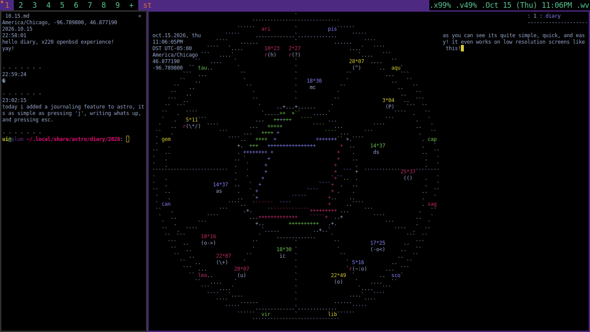

15 October 2026
Article published by: yam
Date of publication: 15 October 2026

)easily log experience, feelings, into a simple to grep directory. Creates a new directory for the current year, and appends to the same page for each day.
:)
Markdown file for this page: https://sweetpotato.press/news/diary.md
This HTML page was generated by the Libreboot Static Site Generator.